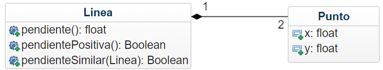

Hacer una aplicación donde se introduzcan las coordenadas de dos líneas rectas y se calculen sus pendientes. Se deberá comparar además si las pendientes de ambas líneas son similares.
Las coordenadas están conformadas por un objeto Punto que esta formado a su vez por una posición x y una posición y.
Por lo tanto un objeto Linea está
compuesto por dos objetos Puntos.
El objeto Linea, además del método pendiente(), deberá tener los siguientes métodos:
true en caso de que la pendiente sea positiva, caso contrario, retornará false.true en caso de que las pendientes de ambas líneas tengan el mismo signo, caso contrario, retornará false.El diagrama UML se muestra a continuación:

| Punto A (x) | Punto A (y) | Punto B (x) | Punto B (y) | ||
|---|---|---|---|---|---|
| Linea 1 | |||||
| Linea 2 |
Fórmula pendiente: (PuntoB(y) - PuntoA(y)) / (PuntoB(x) - PuntoA(x))